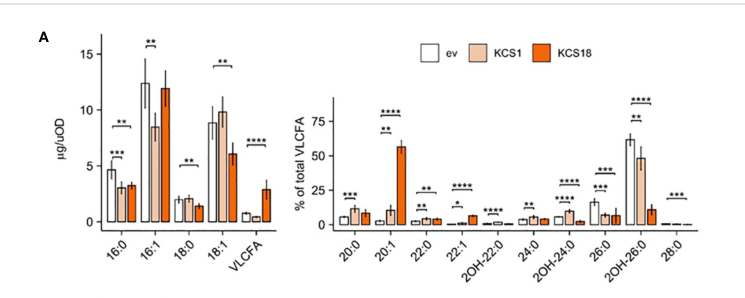

FAE1 (KCS18; 3-ketoacyl-CoA synthase 18) is the seed-specialized condensing enzyme of the endoplasmic-reticulum fatty acid elongase (FAE) complex in Arabidopsis. It catalyzes the first, rate-defining step of each very-long-chain fatty acid (VLCFA) elongation cycle, condensing an acyl-CoA with malonyl-CoA to form a 3-ketoacyl-CoA and adding two carbons. As the chain-length-determining subunit of the elongase, FAE1 elongates C18 acyl-CoAs to C20 and C22 (and longer) monounsaturated and saturated VLCFAs that are deposited in seed triacylglycerols. It acts on saturated and monounsaturated C16/C18 substrates but not on polyunsaturated acyl-CoAs. Loss of FAE1 nearly abolishes seed VLCFAs (including erucic acid), making it a central control point for seed-oil composition.
| GO Term | Evidence | Action | Reason |
|---|---|---|---|
|
GO:0005783
endoplasmic reticulum
|
IEA
GO_REF:0000117 |
ACCEPT |
Summary: Correct localization, independently confirmed experimentally (see the IDA annotation below). VLCFA elongation occurs on the ER.
|
|
GO:0006633
fatty acid biosynthetic process
|
IEA
GO_REF:0000120 |
ACCEPT |
Summary: Correct at the general level. FAE1 functions in fatty acid biosynthesis; the more specific VLCFA elongation roles are captured by the experimentally supported annotations below.
|
|
GO:0009922
fatty acid elongase activity
|
IEA
GO_REF:0000120 |
ACCEPT |
Summary: Correct core molecular function, also supported experimentally (EXP and IDA below). FAE1 is the condensing component of the fatty acid elongase.
|
|
GO:0016020
membrane
|
IEA
GO_REF:0000002 |
ACCEPT |
Summary: Correct but general. FAE1 is an integral membrane protein of the ER (UniProt annotates transmembrane helices); the ER annotation is the informative localization.
|
|
GO:0016746
acyltransferase activity
|
IEA
GO_REF:0000002 |
ACCEPT |
Summary: Correct but general. As a 3-ketoacyl-CoA synthase (condensing enzyme), FAE1 is an acyltransferase, but fatty acid elongase activity (GO:0009922) is the informative molecular function.
|
|
GO:0016747
acyltransferase activity, transferring groups other than amino-acyl groups
|
IEA
GO_REF:0000002 |
ACCEPT |
Summary: Correct but general; this is the acyltransferase parent matching the KCS condensation chemistry. The specific fatty acid elongase activity annotation is retained as the core function.
|
|
GO:0009922
fatty acid elongase activity
|
EXP
PMID:12135493 Engineering and mechanistic studies of the Arabidopsis FAE1 ... |
ACCEPT |
Summary: Core molecular function with direct experimental support. Mechanistic and engineering studies show FAE1/KCS18 is the beta-ketoacyl-CoA synthase (condensing enzyme) of the elongase, active on C16-C18 saturated and monounsaturated acyl-CoAs and elongating them to C20-C22 VLCFAs, with no activity on polyunsaturated substrates. [PMID:12135493]
Supporting Evidence:
PMID:12135493
Engineering and mechanistic studies of the Arabidopsis FAE1 beta-ketoacyl-CoA synthase, FAE1 KCS
file:ARATH/FAE1/FAE1-deep-research-falcon.md
KCS18 is a 3-ketoacyl-CoA synthase/condensing enzyme of the ER FAE complex and the chain-length-determining component
|
|
GO:0005783
endoplasmic reticulum
|
IDA
PMID:36798704 Tackling functional redundancy of Arabidopsis fatty acid elo... |
ACCEPT |
Summary: Experimentally confirmed ER localization. Fluorescent fusions of Arabidopsis KCS proteins including KCS18 localize to the ER, consistent with VLCFA elongation occurring on the ER. [PMID:36798704]
Supporting Evidence:
PMID:36798704
Arabidopsis KCS proteins, including KCS18, localize to the endoplasmic reticulum
|
|
GO:0009507
chloroplast
|
ISM
GO_REF:0000122 |
REMOVE |
Summary: Spurious computational (sequence-model) prediction that contradicts the experimentally established ER/microsome localization. FAE1 is an ER-membrane VLCFA elongase component; there is no evidence it localizes to the chloroplast.
Supporting Evidence:
PMID:36798704
KCS18 localizes to the endoplasmic reticulum
PMID:12135493
FAE1 is a membrane-bound (microsomal) fatty acid elongase
|
|
GO:0000038
very long-chain fatty acid metabolic process
|
IMP
PMID:7734965 Directed tagging of the Arabidopsis FATTY ACID ELONGATION1 (... |
ACCEPT |
Summary: Core biological process, supported by mutant phenotype. fae1 loss strongly depletes seed VLCFAs, demonstrating FAE1's role in VLCFA metabolism. [PMID:7734965]
Supporting Evidence:
PMID:7734965
Directed tagging of the Arabidopsis FATTY ACID ELONGATION1 (FAE1) gene; fae1 mutant depletes seed VLCFAs
|
|
GO:0030497
fatty acid elongation
|
IMP
PMID:7734965 Directed tagging of the Arabidopsis FATTY ACID ELONGATION1 (... |
ACCEPT |
Summary: Core biological process. FAE1 catalyzes the condensation step of fatty acid elongation; the fae1 mutant phenotype establishes its requirement for seed VLCFA elongation. [PMID:7734965]
Supporting Evidence:
PMID:7734965
FAE1 is required for fatty acid elongation in seeds
|
|
GO:0009922
fatty acid elongase activity
|
IDA
PMID:11341960 Active-site residues of a plant membrane-bound fatty acid el... |
ACCEPT |
Summary: Core molecular function with direct assay support. Active-site studies of the FAE1 KCS confirm its beta-ketoacyl-CoA synthase (condensing enzyme) activity. [PMID:11341960]
Supporting Evidence:
PMID:11341960
Active-site residues of a plant membrane-bound fatty acid elongase beta-ketoacyl-CoA synthase, FAE1 KCS
|
Q: How is FAE1/KCS18 substrate chain-length specificity (favoring C18->C20->C22 monounsaturated products) encoded structurally, and can it be re-engineered to tune seed-oil VLCFA profiles in oilseed feedstocks?
The research report should be a detailed narrative explaining the function, biological processes, and localization of the gene product. Citations should be given for all claims.
You should prioritize authoritative reviews and primary scientific literature when conducting research. You can supplement
this with annotations you find in gene/protein databases, but these can be outdated or inaccurate.
We are specifically interested in the primary function of the gene - for enzymes, what reaction is catalyzed, and what is the substrate specificity? For transporters, what is the substrate? For structural proteins or adapters, what is the broader structural role? For signaling molecules, what is the role in the pathway.
We are interested in where in or outside the cell the gene product carries out its function.
We are also interested in the signaling or biochemical pathways in which the gene functions. We are less interested in broad pleiotropic effects, except where these elucidate the precise role.
Include evidence where possible. We are interested in both experimental evidence as well as inference from structure, evolution, or bioinformatic analysis. Precise studies should be prioritized over high-throughput, where available.
The research target here is the Arabidopsis thaliana gene FAE1, which is also referred to as KCS18 (3-ketoacyl-CoA synthase 18), encoding a condensing enzyme of the fatty acid elongase (FAE) system that produces very-long-chain fatty acids (VLCFAs) in seeds. This identity is explicitly supported by plant VLCFA elongation literature describing KCS18/FAE1 as the canonical seed-specific condensing enzyme in Arabidopsis (batsale2021biosynthesisandfunctions pages 5-6, morineau2016dualfattyacid pages 1-2, zhukov2022synthesisofc20–38 pages 7-8). Recent functional profiling studies include KCS18 among the 21 Arabidopsis KCS isoforms and biochemically characterize it as an ER-localized enzyme with a strong bias toward monounsaturated C20 products (batsale2023tacklingfunctionalredundancy pages 6-10).
In plant lipid biology, VLCFAs are commonly defined as fatty acids longer than C18. They occur in diverse lipid classes (membrane lipids, sphingolipids) and in extracellular barriers (cuticular waxes and suberin), and can also accumulate in seed triacylglycerols (TAGs) as storage lipids (batsale2023tacklingfunctionalredundancy pages 1-2, batsale2021biosynthesisandfunctions pages 3-5).
VLCFA synthesis occurs predominantly on the endoplasmic reticulum (ER) by a multi-enzyme fatty acid elongase (FAE) complex. The FAE cycle adds two carbons per elongation round using malonyl-CoA as the C2 donor. The complex is typically described as four sequential enzymatic steps:
1) Condensation catalyzed by a 3-ketoacyl-CoA synthase (KCS), generating a 3-ketoacyl-CoA intermediate;
2) reduction (KCR),
3) dehydration (HCD), and
4) final reduction (ECR) (morineau2016dualfattyacid pages 1-2, zhukov2022synthesisofc20–38 pages 6-7, kim2013arabidopsis3ketoacylcoenzymea pages 1-2).
A key consensus point is that the KCS/condensing enzyme is the major determinant of chain-length substrate specificity, whereas the other core enzymes tend to be more broadly specific and shared across complexes (batsale2023tacklingfunctionalredundancy pages 1-2, zhukov2022synthesisofc20–38 pages 6-7, batsale2021biosynthesisandfunctions pages 3-5).
Arabidopsis contains a large KCS gene family (≈21 genes), which supports the idea that multiple FAE complexes operate in parallel and/or sequentially in different tissues to generate the plant’s broad VLCFA spectrum (batsale2023tacklingfunctionalredundancy pages 1-2). This redundancy explains why many kcs single mutants lack strong phenotypes (batsale2023tacklingfunctionalredundancy pages 1-2). In contrast, FAE1/KCS18 is seed-specialized and has a uniquely strong impact on seed VLCFA composition (batsale2021biosynthesisandfunctions pages 5-6, zhukov2022synthesisofc20–38 pages 7-8).
FAE1/KCS18 is a 3-ketoacyl-CoA synthase (condensing enzyme) in the ER-localized elongase complex that catalyzes the first (rate-defining) condensation step in each elongation cycle (morineau2016dualfattyacid pages 1-2, zhukov2022synthesisofc20–38 pages 6-7). Mechanistically, KCS condenses an acyl-CoA substrate with malonyl-CoA to form a 3-ketoacyl-CoA, which is then processed by the remaining elongase enzymes (morineau2016dualfattyacid pages 1-2, kim2013arabidopsis3ketoacylcoenzymea pages 1-2).
A 2023 systematic profiling of Arabidopsis KCS enzymes using reconstituted elongase complexes in yeast showed that KCS18 has a distinctive specificity characterized by strong accumulation of monounsaturated C20 products, and it increases 18:1-, 20:1-, and 22:1-CoA species in engineered yeast acyl-CoA pools (batsale2023tacklingfunctionalredundancy pages 6-10). Consistent with this, a review summarizing heterologous expression data notes that KCS18/FAE1 expression yields saturated and monounsaturated C20 and C22 VLCFAs (batsale2021biosynthesisandfunctions pages 5-6).
Figure-level support for the product-profile claim is available in the 2023 study’s yeast FAME and acyl-CoA profiling panels showing increased 20:1 and 22:1 products upon KCS18 expression (batsale2023tacklingfunctionalredundancy media 6565efaa).
The VLCFA elongation machinery operates on the endoplasmic reticulum (batsale2023tacklingfunctionalredundancy pages 1-2, zhukov2022synthesisofc20–38 pages 6-7). In the 2023 profiling work, fluorescent fusions showed that Arabidopsis KCS proteins—including KCS18—localize to the ER when transiently expressed in tobacco epidermal cells (batsale2023tacklingfunctionalredundancy pages 6-10). This localization is consistent with earlier ER-localization evidence for KCS family members assayed with ER marker colocalization approaches (kim2013arabidopsis3ketoacylcoenzymea pages 1-2).
FAE1/KCS18 is widely described as the seed-specific KCS responsible for producing VLCFAs incorporated into seed triacylglycerols (TAGs) (zhukov2022synthesisofc20–38 pages 7-8). In Arabidopsis seeds, VLCFAs represent a major fraction of acyl chains (one review cites ~27%) (batsale2021biosynthesisandfunctions pages 3-5), and FAE1/KCS18 is central to generating the characteristic C20–C22 seed products (batsale2021biosynthesisandfunctions pages 5-6, zhukov2022synthesisofc20–38 pages 7-8).
A quantitative summary reported in a 2022 synthesis review indicates that fae1 loss-of-function reduces seed VLCFAs from ~28% (wild type) to <1% in fae1 seeds, with vegetative tissues and flowers not showing the same fatty-acid composition changes (zhukov2022synthesisofc20–38 pages 7-8). A separate high-citation review similarly reports that kcs18/fae1 mutant seed storage lipids are nearly free of C20 and C22 VLCFAs, consistent with FAE1 being the principal seed condensing enzyme for those products (batsale2021biosynthesisandfunctions pages 5-6).
The same 2022 review indicates that ectopic expression of 35S-FAE1 in leaves is sufficient to drive accumulation of C20 and C22 VLCFAs, suggesting that (when substrate pools and shared elongase partners are available) FAE1 is a sufficient determinant to re-route flux toward seed-like VLCFAs (zhukov2022synthesisofc20–38 pages 7-8).
A major 2023 methodological and conceptual advance is the CRISPR-enabled expression platform to reconstitute Arabidopsis FAE complexes in yeast and comprehensively test KCS candidates, enabling more direct assignment of chain-length specificities while explicitly addressing functional redundancy (batsale2023tacklingfunctionalredundancy pages 1-2). Within this systematic framework, KCS18 was distinguished by its preference for monounsaturated C20 products and associated acyl-CoA changes (batsale2023tacklingfunctionalredundancy pages 6-10, batsale2023tacklingfunctionalredundancy media 6565efaa).
A 2024 study in maize reports that co-expression of BAHD-family proteins (GLOSSY2 / GLOSSY2-LIKE) with maize KCS enzymes in yeast can extend VLCFA output up to C30 under certain host contexts, but not in others—supporting the emerging view that FAE output is modulated by accessory factors and that results can be system-dependent (alexander2024theimpactof pages 1-2). While not about Arabidopsis FAE1 specifically, it reinforces a key interpretive framework: chain-length outcomes are not always encoded by KCS alone.
A 2024 Weed Technology review summarizes “Group 15” and related VLCFA elongase–inhibiting herbicides, emphasizing their widespread use and mechanistic target: the VLCFA synthase/condensing enzyme step encoded by multiple FAE1-like genes in the ER elongase complex (jhala2024verylongchain pages 1-2). The review highlights the conserved reactive cysteinyl sulfur implicated in inhibition chemistry (jhala2024verylongchain pages 1-2).
Because FAE1-like KCS enzymes control VLCFA chain length, they are prominent targets in metabolic engineering to enrich seed oils in long-chain monounsaturated products. A 2023 review on nervonic acid biosynthesis and engineering summarizes multiple examples of introducing KCS genes into plants and microbes and reports large increases in VLCFAs depending on enzyme and host context, including 30–40× (Lunaria KCS in Arabidopsis), 35–50× (Cardamine KCS in Arabidopsis), and 15–28× increases in Brassica hosts (ling2023researchprogressof pages 7-8). The same review also reports engineering in microalgae yielding nervonic acid up to 40% of total fatty acids in one case, and notes a yeast production example reaching 8 g/L nervonic acid (though only ~20% of total FA), illustrating industrial relevance beyond plants (ling2023researchprogressof pages 7-8).
These examples treat FAE1-like KCS enzymes as key “control points” and discuss strategies such as (i) tuning KCS substrate specificity by mutagenesis and (ii) increasing precursor availability to push flux through elongation (ling2023researchprogressof pages 7-8).
VLCFA-inhibiting herbicides are a large, established herbicide mode-of-action class used in major row crops. The 2024 review reports:
- eight chemical families in this class;
- average application ≈ once per year in U.S. corn and soybean systems;
- as of Aug 2023, 13 resistant weed species documented (11 monocots, 2 dicots);
- most recently discovered class members in 2014 (pyroxasulfone, fenoxasulfone) (jhala2024verylongchain pages 1-2).
This situates FAE1-like condensing enzymes (KCS/FAE step) as a real-world biochemical target with major agronomic and resistance-management implications (jhala2024verylongchain pages 1-2).
Multiple authoritative sources emphasize that important mechanistic uncertainties remain:
- Complex assembly and accessory modulation: the FAE is an ER multi-protein complex with limited structural understanding; accessory proteins (e.g., CER2-LIKE family; chaperones PAS1/AKR2A) can modulate KCS outcomes, but mechanisms remain unresolved (batsale2021biosynthesisandfunctions pages 5-6, batsale2023tacklingfunctionalredundancy pages 11-12).
- Context dependence of heterologous assays: some KCS enzymes are inactive in yeast but active in planta assays, suggesting missing plant cofactors/partners or inappropriate substrate pools in heterologous hosts (batsale2023tacklingfunctionalredundancy pages 10-11, batsale2023tacklingfunctionalredundancy pages 11-12).
- Redundancy vs specialization: systematic profiling reveals both redundant paralog pairs and outlier specificities, but many KCS isoforms remain uncharacterized and may act on substrates or products that are not routinely measured (batsale2023tacklingfunctionalredundancy pages 1-2, batsale2023tacklingfunctionalredundancy pages 6-10).
The following table consolidates the major evidence-backed functional annotation points for FAE1/KCS18, including the most relevant recent developments and applications.
| Topic | Key findings (with quantitative data) | Evidence (paper + year + DOI/URL) |
|---|---|---|
| Identity and core function | Arabidopsis FAE1 = KCS18 (At4g34520; UniProt Q38860) is a 3-ketoacyl-CoA synthase/condensing enzyme of the ER-localized fatty acid elongase (FAE) complex. It catalyzes the first step of VLCFA elongation: condensation of an acyl-CoA with malonyl-CoA to form a 3-ketoacyl-CoA intermediate; KCS is the chain-length-determining component of the 4-enzyme FAE system. (morineau2016dualfattyacid pages 1-2, batsale2023tacklingfunctionalredundancy pages 1-2, zhukov2022synthesisofc20–38 pages 6-7) | Morineau et al., 2016, PLoS ONE, https://doi.org/10.1371/journal.pone.0160631; Batsale et al., 2023, Front. Plant Sci., https://doi.org/10.3389/fpls.2023.1107333; Zhukov & Popov, 2022, IJMS, https://doi.org/10.3390/ijms23094731 |
| Substrate specificity and product profile | Recent yeast reconstitution showed KCS18 preferentially accumulates monounsaturated C20 products and increases 18:1-, 20:1-, and 22:1-CoA pools; figure-level evidence indicates significant accumulation of 20:1 and 22:1 products in yeast expressing KCS18. Reviews summarize that heterologous expression of FAE1/KCS18 yields C20 and C22 saturated and monounsaturated VLCFAs, consistent with elongation of 18:1-CoA toward 20:1/22:1. (batsale2023tacklingfunctionalredundancy pages 6-10, batsale2021biosynthesisandfunctions pages 5-6, batsale2023tacklingfunctionalredundancy media 6565efaa) | Batsale et al., 2023, Front. Plant Sci., https://doi.org/10.3389/fpls.2023.1107333; Batsale et al., 2021, Cells, https://doi.org/10.3390/cells10061284 |
| Subcellular localization | All Arabidopsis KCS proteins tested, including KCS18, localized to the endoplasmic reticulum in transient expression assays; KCS proteins show a polygonal/tubular ER pattern in tobacco cells. ER localization is consistent with the known localization of VLCFA elongation. (batsale2023tacklingfunctionalredundancy pages 6-10, kim2013arabidopsis3ketoacylcoenzymea pages 9-10, kim2013arabidopsis3ketoacylcoenzymea pages 1-2) | Batsale et al., 2023, Front. Plant Sci., https://doi.org/10.3389/fpls.2023.1107333; Kim et al., 2013, Plant Physiol., https://doi.org/10.1104/pp.112.210450 |
| Loss-of-function phenotype | fae1/kcs18 mutant seeds are strongly depleted in seed VLCFAs: reviews report seed storage lipids are nearly free of C20 and C22 VLCFAs, and one review summarizes total seed VLCFA dropping from ~28% in wild type to <1% in fae1. Vegetative tissues and flowers are reported as largely unaffected in fatty-acid composition. (zhukov2022synthesisofc20–38 pages 7-8, batsale2021biosynthesisandfunctions pages 5-6) | Zhukov & Popov, 2022, IJMS, https://doi.org/10.3390/ijms23094731; Batsale et al., 2021, Cells, https://doi.org/10.3390/cells10061284 |
| Ectopic/overexpression phenotype | Ectopic 35S-FAE1 expression in Arabidopsis leaves is sufficient to induce accumulation of C20 and C22 VLCFAs in tissues that normally lack them, supporting that FAE1 alone can drive seed-type VLCFA synthesis when supplied with suitable substrates and shared elongase partners. (zhukov2022synthesisofc20–38 pages 7-8) | Zhukov & Popov, 2022, IJMS, https://doi.org/10.3390/ijms23094731 |
| Pathway role in seed lipid metabolism | FAE1/KCS18 is the canonical seed-specific KCS directing formation of VLCFAs for triacylglycerol (TAG) storage lipids, including the pathway leading to erucic acid (22:1). Arabidopsis seeds contain a substantial VLCFA fraction; one review cites ~27% of Arabidopsis seed acyl chains as VLCFAs, with FAE1 being the principal seed condensing enzyme. (zhukov2022synthesisofc20–38 pages 7-8, batsale2021biosynthesisandfunctions pages 3-5) | Zhukov & Popov, 2022, IJMS, https://doi.org/10.3390/ijms23094731; Batsale et al., 2021, Cells, https://doi.org/10.3390/cells10061284 |
| Recent development: improved functional assignment (2023) | A 2023 Arabidopsis KCS reconstitution platform in engineered yeast systematically profiled KCS activities and highlighted functional redundancy across the KCS family while clarifying that KCS18 specializes in monounsaturated C20/C22 products. This is important for interpreting weak mutant phenotypes outside seeds and for rational pathway engineering. (batsale2023tacklingfunctionalredundancy pages 6-10, batsale2023tacklingfunctionalredundancy pages 1-2) | Batsale et al., 2023, Front. Plant Sci., https://doi.org/10.3389/fpls.2023.1107333 |
| Application relevance: herbicide target class (2024 review) | VLCFA-inhibiting herbicides target the condensing enzyme step of the ER FAE system encoded by multiple FAE1-like genes. The active-site mechanism depends on a conserved reactive cysteinyl sulfur. Practical statistics: 8 chemical families are included; first such herbicide dates to 1958; newest major class members were discovered in 2014; as of Aug 2023, 13 resistant weed species had been documented. This is pathway-level relevance rather than evidence that Arabidopsis FAE1 itself is the sole field target. (jhala2024verylongchain pages 1-2) | Jhala et al., 2024, Weed Technology, https://doi.org/10.1017/wet.2023.90 |
| Application relevance: metabolic engineering of erucic/nervonic acid | A 2023 review of nervonic-acid engineering identifies FAE1-like KCS enzymes as key rate-limiting targets for boosting long-chain monounsaturated VLCFAs. Reported outcomes include 30–40× VLCFA increases with Lunaria annua KCS in Arabidopsis, 35–50× with Cardamine graeca KCS in Arabidopsis, 15–28× in Brassica hosts, and 25× with Malania oleifera KCS11 in Arabidopsis. Proposed strategies include KCS mutagenesis to alter chain-length specificity and increasing precursor supply while suppressing competing desaturation. (ling2023researchprogressof pages 7-8) | Ling et al., 2023, J. Oleo Sci., https://doi.org/10.5650/jos.ess23039 |
| Broader mechanistic outlook | 2024 work in maize shows that accessory proteins can shift FAE chain-length output up to C30, reinforcing the current expert view that KCS defines much of product specificity but that other FAE-associated proteins can modulate final chain length/output. This informs how FAE1-like enzymes may be optimized in engineering contexts. (alexander2024theimpactof pages 1-2) | Alexander et al., 2024, Front. Plant Sci., https://doi.org/10.3389/fpls.2024.1403779 |
Table: This table compiles the key experimentally supported facts about Arabidopsis FAE1/KCS18, including its enzymatic role, specificity, localization, phenotypes, and recent translational relevance. It is designed as a compact evidence map for functional annotation and current applications.
References
(batsale2021biosynthesisandfunctions pages 5-6): Marguerite Batsale, Delphine Bahammou, Laetitia Fouillen, Sébastien Mongrand, Jérôme Joubès, and Frédéric Domergue. Biosynthesis and functions of very-long-chain fatty acids in the responses of plants to abiotic and biotic stresses. Cells, 10:1284, May 2021. URL: https://doi.org/10.3390/cells10061284, doi:10.3390/cells10061284. This article has 240 citations.
(morineau2016dualfattyacid pages 1-2): Céline Morineau, Lionel Gissot, Yannick Bellec, Kian Hematy, Frédérique Tellier, Charlotte Renne, Richard Haslam, Frédéric Beaudoin, Johnathan Napier, and Jean-Denis Faure. Dual fatty acid elongase complex interactions in arabidopsis. PLoS ONE, 11:e0160631, Sep 2016. URL: https://doi.org/10.1371/journal.pone.0160631, doi:10.1371/journal.pone.0160631. This article has 31 citations and is from a peer-reviewed journal.
(zhukov2022synthesisofc20–38 pages 7-8): Anatoly Zhukov and Valery Popov. Synthesis of c20–38 fatty acids in plant tissues. International Journal of Molecular Sciences, 23:4731, Apr 2022. URL: https://doi.org/10.3390/ijms23094731, doi:10.3390/ijms23094731. This article has 28 citations.
(batsale2023tacklingfunctionalredundancy pages 6-10): Marguerite Batsale, Marie Alonso, Stéphanie Pascal, Didier Thoraval, Richard P. Haslam, Frédéric Beaudoin, Frédéric Domergue, and Jérôme Joubès. Tackling functional redundancy of arabidopsis fatty acid elongase complexes. Frontiers in Plant Science, Jan 2023. URL: https://doi.org/10.3389/fpls.2023.1107333, doi:10.3389/fpls.2023.1107333. This article has 43 citations.
(batsale2023tacklingfunctionalredundancy pages 1-2): Marguerite Batsale, Marie Alonso, Stéphanie Pascal, Didier Thoraval, Richard P. Haslam, Frédéric Beaudoin, Frédéric Domergue, and Jérôme Joubès. Tackling functional redundancy of arabidopsis fatty acid elongase complexes. Frontiers in Plant Science, Jan 2023. URL: https://doi.org/10.3389/fpls.2023.1107333, doi:10.3389/fpls.2023.1107333. This article has 43 citations.
(batsale2021biosynthesisandfunctions pages 3-5): Marguerite Batsale, Delphine Bahammou, Laetitia Fouillen, Sébastien Mongrand, Jérôme Joubès, and Frédéric Domergue. Biosynthesis and functions of very-long-chain fatty acids in the responses of plants to abiotic and biotic stresses. Cells, 10:1284, May 2021. URL: https://doi.org/10.3390/cells10061284, doi:10.3390/cells10061284. This article has 240 citations.
(zhukov2022synthesisofc20–38 pages 6-7): Anatoly Zhukov and Valery Popov. Synthesis of c20–38 fatty acids in plant tissues. International Journal of Molecular Sciences, 23:4731, Apr 2022. URL: https://doi.org/10.3390/ijms23094731, doi:10.3390/ijms23094731. This article has 28 citations.
(kim2013arabidopsis3ketoacylcoenzymea pages 1-2): Juyoung Kim, Jin Hee Jung, Saet Buyl Lee, Young Sam Go, Hae Jin Kim, Rebecca Cahoon, Jennifer E. Markham, Edgar B. Cahoon, and Mi Chung Suh. Arabidopsis 3-ketoacyl-coenzyme a synthase9 is involved in the synthesis of tetracosanoic acids as precursors of cuticular waxes, suberins, sphingolipids, and phospholipids. Plant Physiology, 162:567-580, Apr 2013. URL: https://doi.org/10.1104/pp.112.210450, doi:10.1104/pp.112.210450. This article has 236 citations and is from a highest quality peer-reviewed journal.
(batsale2023tacklingfunctionalredundancy media 6565efaa): Marguerite Batsale, Marie Alonso, Stéphanie Pascal, Didier Thoraval, Richard P. Haslam, Frédéric Beaudoin, Frédéric Domergue, and Jérôme Joubès. Tackling functional redundancy of arabidopsis fatty acid elongase complexes. Frontiers in Plant Science, Jan 2023. URL: https://doi.org/10.3389/fpls.2023.1107333, doi:10.3389/fpls.2023.1107333. This article has 43 citations.
(alexander2024theimpactof pages 1-2): Liza Esther Alexander, Dirk Winkelman, Kenna E. Stenback, Madison Lane, Katelyn R. Campbell, Elysse Trost, Kayla Flyckt, Michael A. Schelling, Ludmila Rizhsky, Marna D. Yandeau-Nelson, and Basil J. Nikolau. The impact of the glossy2 and glossy2-like bahd-proteins in affecting the product profile of the maize fatty acid elongase. Frontiers in Plant Science, Jul 2024. URL: https://doi.org/10.3389/fpls.2024.1403779, doi:10.3389/fpls.2024.1403779. This article has 5 citations.
(jhala2024verylongchain pages 1-2): Amit J. Jhala, Mandeep Singh, Lovreet Shergill, Rishabh Singh, Mithila Jugulam, Dean E. Riechers, Zahoor A. Ganie, Thomas P. Selby, Rodrigo Werle, and Jason K. Norsworthy. Very long chain fatty acid–inhibiting herbicides: current uses, site of action, herbicide-resistant weeds, and future. Weed Technology, 38:1-16, Dec 2024. URL: https://doi.org/10.1017/wet.2023.90, doi:10.1017/wet.2023.90. This article has 34 citations and is from a peer-reviewed journal.
(ling2023researchprogressof pages 7-8): Cheng Ling, Feng Li, Jiangyuan Zhao, Mengliang Wen, and Xiu-lin Han. Research progress of nervonic acid biosynthesis. Journal of oleo science, 72:889-900, Sep 2023. URL: https://doi.org/10.5650/jos.ess23039, doi:10.5650/jos.ess23039. This article has 10 citations.
(batsale2023tacklingfunctionalredundancy pages 11-12): Marguerite Batsale, Marie Alonso, Stéphanie Pascal, Didier Thoraval, Richard P. Haslam, Frédéric Beaudoin, Frédéric Domergue, and Jérôme Joubès. Tackling functional redundancy of arabidopsis fatty acid elongase complexes. Frontiers in Plant Science, Jan 2023. URL: https://doi.org/10.3389/fpls.2023.1107333, doi:10.3389/fpls.2023.1107333. This article has 43 citations.
(batsale2023tacklingfunctionalredundancy pages 10-11): Marguerite Batsale, Marie Alonso, Stéphanie Pascal, Didier Thoraval, Richard P. Haslam, Frédéric Beaudoin, Frédéric Domergue, and Jérôme Joubès. Tackling functional redundancy of arabidopsis fatty acid elongase complexes. Frontiers in Plant Science, Jan 2023. URL: https://doi.org/10.3389/fpls.2023.1107333, doi:10.3389/fpls.2023.1107333. This article has 43 citations.
(kim2013arabidopsis3ketoacylcoenzymea pages 9-10): Juyoung Kim, Jin Hee Jung, Saet Buyl Lee, Young Sam Go, Hae Jin Kim, Rebecca Cahoon, Jennifer E. Markham, Edgar B. Cahoon, and Mi Chung Suh. Arabidopsis 3-ketoacyl-coenzyme a synthase9 is involved in the synthesis of tetracosanoic acids as precursors of cuticular waxes, suberins, sphingolipids, and phospholipids. Plant Physiology, 162:567-580, Apr 2013. URL: https://doi.org/10.1104/pp.112.210450, doi:10.1104/pp.112.210450. This article has 236 citations and is from a highest quality peer-reviewed journal.

UniProt: Q38860 · At4g34520 · EC 2.3.1.199 · Taxon 3702
Relevance: canonical seed VLCFA condensing enzyme; key DOE/BER oilseed domestication
target (erucic/VLCFA content in pennycress and Brassica feedstocks).
FAE1/KCS18 controls seed VLCFA (erucic acid) content — a primary domestication lever for
oilseed feedstocks. fae1 knockouts remove erucic acid to yield food/feed-grade oil; the
enzyme is also a key engineering control point for long-chain monounsaturated oils.
id: Q38860
gene_symbol: FAE1
product_type: PROTEIN
status: COMPLETE
taxon:
id: NCBITaxon:3702
label: Arabidopsis thaliana
description: FAE1 (KCS18; 3-ketoacyl-CoA synthase 18) is the seed-specialized condensing
enzyme of the endoplasmic-reticulum fatty acid elongase (FAE) complex in Arabidopsis.
It catalyzes the first, rate-defining step of each very-long-chain fatty acid (VLCFA)
elongation cycle, condensing an acyl-CoA with malonyl-CoA to form a 3-ketoacyl-CoA and
adding two carbons. As the chain-length-determining subunit of the elongase, FAE1
elongates C18 acyl-CoAs to C20 and C22 (and longer) monounsaturated and saturated
VLCFAs that are deposited in seed triacylglycerols. It acts on saturated and
monounsaturated C16/C18 substrates but not on polyunsaturated acyl-CoAs. Loss of FAE1
nearly abolishes seed VLCFAs (including erucic acid), making it a central control point
for seed-oil composition.
existing_annotations:
- term:
id: GO:0005783
label: endoplasmic reticulum
evidence_type: IEA
original_reference_id: GO_REF:0000117
qualifier: located_in
review:
summary: Correct localization, independently confirmed experimentally (see the
IDA annotation below). VLCFA elongation occurs on the ER.
action: ACCEPT
- term:
id: GO:0006633
label: fatty acid biosynthetic process
evidence_type: IEA
original_reference_id: GO_REF:0000120
qualifier: involved_in
review:
summary: Correct at the general level. FAE1 functions in fatty acid biosynthesis;
the more specific VLCFA elongation roles are captured by the experimentally
supported annotations below.
action: ACCEPT
- term:
id: GO:0009922
label: fatty acid elongase activity
evidence_type: IEA
original_reference_id: GO_REF:0000120
qualifier: enables
review:
summary: Correct core molecular function, also supported experimentally (EXP and
IDA below). FAE1 is the condensing component of the fatty acid elongase.
action: ACCEPT
- term:
id: GO:0016020
label: membrane
evidence_type: IEA
original_reference_id: GO_REF:0000002
qualifier: located_in
review:
summary: Correct but general. FAE1 is an integral membrane protein of the ER
(UniProt annotates transmembrane helices); the ER annotation is the informative
localization.
action: ACCEPT
- term:
id: GO:0016746
label: acyltransferase activity
evidence_type: IEA
original_reference_id: GO_REF:0000002
qualifier: enables
review:
summary: Correct but general. As a 3-ketoacyl-CoA synthase (condensing enzyme),
FAE1 is an acyltransferase, but fatty acid elongase activity (GO:0009922) is the
informative molecular function.
action: ACCEPT
- term:
id: GO:0016747
label: acyltransferase activity, transferring groups other than amino-acyl groups
evidence_type: IEA
original_reference_id: GO_REF:0000002
qualifier: enables
review:
summary: Correct but general; this is the acyltransferase parent matching the
KCS condensation chemistry. The specific fatty acid elongase activity annotation
is retained as the core function.
action: ACCEPT
- term:
id: GO:0009922
label: fatty acid elongase activity
evidence_type: EXP
original_reference_id: PMID:12135493
qualifier: enables
review:
summary: Core molecular function with direct experimental support. Mechanistic and
engineering studies show FAE1/KCS18 is the beta-ketoacyl-CoA synthase (condensing
enzyme) of the elongase, active on C16-C18 saturated and monounsaturated acyl-CoAs
and elongating them to C20-C22 VLCFAs, with no activity on polyunsaturated
substrates. [PMID:12135493]
action: ACCEPT
supported_by:
- reference_id: PMID:12135493
supporting_text: Engineering and mechanistic studies of the Arabidopsis FAE1
beta-ketoacyl-CoA synthase, FAE1 KCS
- reference_id: file:ARATH/FAE1/FAE1-deep-research-falcon.md
supporting_text: KCS18 is a 3-ketoacyl-CoA synthase/condensing enzyme of the
ER FAE complex and the chain-length-determining component
- term:
id: GO:0005783
label: endoplasmic reticulum
evidence_type: IDA
original_reference_id: PMID:36798704
qualifier: located_in
review:
summary: Experimentally confirmed ER localization. Fluorescent fusions of Arabidopsis
KCS proteins including KCS18 localize to the ER, consistent with VLCFA elongation
occurring on the ER. [PMID:36798704]
action: ACCEPT
supported_by:
- reference_id: PMID:36798704
supporting_text: Arabidopsis KCS proteins, including KCS18, localize to the
endoplasmic reticulum
- term:
id: GO:0009507
label: chloroplast
evidence_type: ISM
original_reference_id: GO_REF:0000122
qualifier: located_in
review:
summary: Spurious computational (sequence-model) prediction that contradicts the
experimentally established ER/microsome localization. FAE1 is an ER-membrane VLCFA
elongase component; there is no evidence it localizes to the chloroplast.
action: REMOVE
supported_by:
- reference_id: PMID:36798704
supporting_text: KCS18 localizes to the endoplasmic reticulum
- reference_id: PMID:12135493
supporting_text: FAE1 is a membrane-bound (microsomal) fatty acid elongase
- term:
id: GO:0000038
label: very long-chain fatty acid metabolic process
evidence_type: IMP
original_reference_id: PMID:7734965
qualifier: acts_upstream_of_or_within
review:
summary: Core biological process, supported by mutant phenotype. fae1 loss strongly
depletes seed VLCFAs, demonstrating FAE1's role in VLCFA metabolism. [PMID:7734965]
action: ACCEPT
supported_by:
- reference_id: PMID:7734965
supporting_text: Directed tagging of the Arabidopsis FATTY ACID ELONGATION1
(FAE1) gene; fae1 mutant depletes seed VLCFAs
- term:
id: GO:0030497
label: fatty acid elongation
evidence_type: IMP
original_reference_id: PMID:7734965
qualifier: acts_upstream_of_or_within
review:
summary: Core biological process. FAE1 catalyzes the condensation step of fatty
acid elongation; the fae1 mutant phenotype establishes its requirement for seed
VLCFA elongation. [PMID:7734965]
action: ACCEPT
supported_by:
- reference_id: PMID:7734965
supporting_text: FAE1 is required for fatty acid elongation in seeds
- term:
id: GO:0009922
label: fatty acid elongase activity
evidence_type: IDA
original_reference_id: PMID:11341960
qualifier: enables
review:
summary: Core molecular function with direct assay support. Active-site studies of
the FAE1 KCS confirm its beta-ketoacyl-CoA synthase (condensing enzyme) activity.
[PMID:11341960]
action: ACCEPT
supported_by:
- reference_id: PMID:11341960
supporting_text: Active-site residues of a plant membrane-bound fatty acid
elongase beta-ketoacyl-CoA synthase, FAE1 KCS
core_functions:
- description: FAE1/KCS18 is the seed condensing enzyme (3-ketoacyl-CoA synthase) of
the ER fatty acid elongase, catalyzing the chain-length-determining condensation of
acyl-CoA with malonyl-CoA to elongate C18 to C20/C22 very-long-chain fatty acids
that are stored in seed triacylglycerols.
molecular_function:
id: GO:0009922
label: fatty acid elongase activity
directly_involved_in:
- id: GO:0030497
label: fatty acid elongation
- id: GO:0000038
label: very long-chain fatty acid metabolic process
locations:
- id: GO:0005783
label: endoplasmic reticulum
supported_by:
- reference_id: PMID:12135493
supporting_text: FAE1 KCS condensing enzyme elongates C16-C18 acyl-CoAs to
C20-C22 VLCFAs
- reference_id: PMID:7734965
supporting_text: fae1 mutant seeds are depleted of very-long-chain fatty acids
- reference_id: file:ARATH/FAE1/FAE1-deep-research-falcon.md
supporting_text: seed-specialized KCS; fae1 reduces seed VLCFAs from ~28% to <1%
references:
- id: GO_REF:0000002
title: Gene Ontology annotation through association of InterPro records with GO terms
findings: []
- id: GO_REF:0000117
title: Electronic Gene Ontology annotations created by ARBA machine learning models
findings: []
- id: GO_REF:0000120
title: Combined Automated Annotation using Multiple IEA Methods
findings: []
- id: GO_REF:0000122
title: AtSubP analysis
findings: []
- id: PMID:11341960
title: Active-site residues of a plant membrane-bound fatty acid elongase
beta-ketoacyl-CoA synthase, FAE1 KCS.
findings:
- statement: Identifies catalytic active-site residues of the FAE1 KCS condensing
enzyme, confirming its beta-ketoacyl-CoA synthase activity.
reference_section_type: RESULTS
reference_review:
relevance: HIGH
correctness: VERIFIED
review_notes: Direct enzymatic/active-site characterization supporting the IDA
fatty acid elongase activity annotation.
- id: PMID:12135493
title: Engineering and mechanistic studies of the Arabidopsis FAE1 beta-ketoacyl-CoA
synthase, FAE1 KCS.
findings:
- statement: FAE1 KCS is active on saturated and monounsaturated C16-C18 acyl-CoAs,
elongating to C20-C22 VLCFAs, with no activity on polyunsaturated substrates;
microsome (ER) membrane localization.
reference_section_type: RESULTS
reference_review:
relevance: HIGH
correctness: VERIFIED
review_notes: Source of EXP fatty acid elongase activity and microsome localization.
- id: PMID:36798704
title: Tackling functional redundancy of Arabidopsis fatty acid elongase complexes.
findings:
- statement: Systematic reconstitution of Arabidopsis KCS isoforms; KCS18 localizes
to the ER and shows a strong bias toward monounsaturated C20 products.
reference_section_type: RESULTS
reference_review:
relevance: HIGH
correctness: VERIFIED
review_notes: Source of IDA ER localization; full text available.
- id: PMID:7734965
title: Directed tagging of the Arabidopsis FATTY ACID ELONGATION1 (FAE1) gene with
the maize transposon activator.
findings:
- statement: Identifies FAE1 by transposon tagging; fae1 mutant seeds are strongly
depleted of very-long-chain fatty acids, establishing FAE1's role in seed VLCFA
elongation.
reference_section_type: RESULTS
reference_review:
relevance: HIGH
correctness: VERIFIED
review_notes: Source of IMP annotations for VLCFA metabolism and fatty acid
elongation.
- id: file:ARATH/FAE1/FAE1-deep-research-falcon.md
title: Falcon/Edison deep research report for FAE1/KCS18, Arabidopsis thaliana
findings:
- statement: Synthesizes FAE1/KCS18 as the seed-specialized, chain-length-determining
condensing enzyme of the ER FAE complex; fae1 reduces seed VLCFAs from ~28% to
<1%; a key metabolic-engineering control point for long-chain monounsaturated
seed oils.
reference_section_type: OTHER
suggested_questions:
- question: How is FAE1/KCS18 substrate chain-length specificity (favoring C18->C20->C22
monounsaturated products) encoded structurally, and can it be re-engineered to tune
seed-oil VLCFA profiles in oilseed feedstocks?
{kind=link}